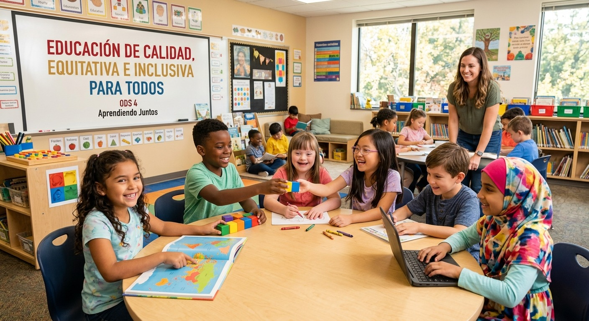
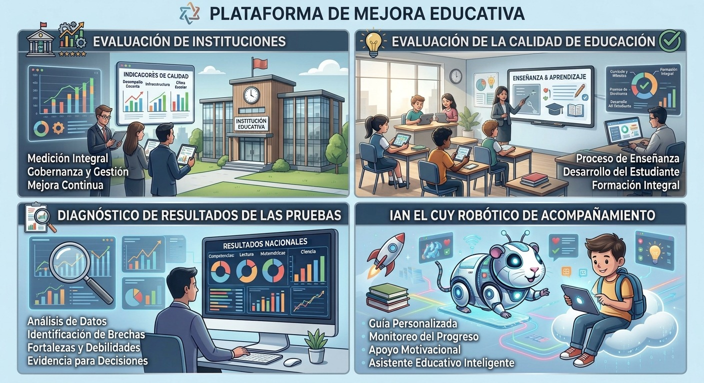
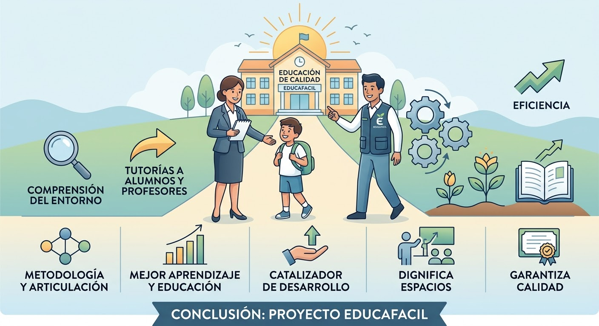

Educación de calidad
El Objetivo de Desarrollo Sostenible 4 (ODS 4): Educación de Calidad es uno de los 17 compromisos globales establecidos por la Organización de las Naciones Unidas (ONU) dentro de la Agenda 2030.
Su meta fundamental es "garantizar una educación inclusiva, equitativa y de calidad, y promover oportunidades de aprendizaje permanente para todos". A diferencia de modelos educativos tradicionales enfocados únicamente en la cobertura o en el número de escuelas construidas, el ODS 4 establece que la educación debe ser transformadora: busca que cada estudiante, independientemente de su origen o contexto socioeconómico, adquiera las competencias prácticas, teóricas y valóricas necesarias para desarrollarse integralmente en el siglo XXI.

Propósito
El propósito fundamental de EDUCAFACIL es impulsar de manera directa el cumplimiento de los compromisos de la Agenda 2030, contribuyendo activamente a la consolidación de un sistema educativo nacional de alto nivel. Para lograrlo, implementamos un modelo integral de diagnóstico y fortalecimiento institucional mediante evaluaciones objetivas que miden la calidad del entorno educativo. A partir de los resultados de cada diagnóstico, gestionamos y facilitamos financiamiento y recursos económicos destinados a la modernización, equipamiento y dignificación de la infraestructura escolar en todo el país.
¿Cómo lo hacemos?
Nuestro proceso de supervisión se realiza en cuatro etapas, garantizando evaluaciones justas, objetivas y orientadas siempre a la mejora:
Evaluación de instalaciones: Verificamos que la escuela cuente con espacios seguros y funcionales: aulas en buen estado, servicios básicos, medidas de seguridad ante emergencias y condiciones adecuadas para el aprendizaje.
Evaluación de la calidad educativa:Analizamos la preparación y desempeño del personal docente, los métodos de enseñanza utilizados, los materiales didácticos disponibles y el ambiente escolar en general.
Diagnóstico de resultados: En base a ambas evaluaciones, si la escuela cumple con los estándares de seguridad y calidad, otorgamos un apoyo monetario como reconocimiento a su labor y para fortalecer su continuidad.
lan de acompañamiento: Si la escuela no cumple en alguno de los rubros, no la dejamos sola: activamos un plan de acompañamiento, gestionando apoyo económico gubernamental, recursos de nuestra fundación o herramientas específicas para que la institución pueda mejorar.

¿Cómo le damos seguimiento?
Damos continuidad a cada caso para asegurarnos de que las mejoras se implementen correctamente y que el apoyo otorgado tenga un impacto real y sostenido en la comunidad educativa.
Mantenemos comunicación constante con directivos y docentes para conocer de primera mano los retos que van surgiendo en el proceso de mejora. Además, contamos con el respaldo de nuestros patrocinadores, quienes hacen posible que los apoyos monetarios y los recursos de mejora lleguen a las escuelas que más lo necesitan. Gracias a su colaboración, podemos ampliar nuestro alcance, garantizando mejores instalaciones, mejores condiciones para los docentes y, sobre todo, una mejor educación para las y los estudiantes.
Nuestros valores
Transparencia: Realizamos evaluaciones totalmente objetivas y comunicamos los resultados con absoluta honestidad y claridad. Rindamos cuentas transparentes sobre el destino de los recursos y los avances logrados, fortaleciendo la confianza entre escuelas, patrocinadores y la comunidad.
Equidad: Creemos firmemente que cada estudiante merece las mismas oportunidades de aprender en un entorno seguro, digno y de calidad. Priorizamos la atención en comunidades con mayor rezago para eliminar las brechas de desigualdad educativa independientemente de la ubicación o recursos de la escuela.
Compromiso: Nuestro trabajo no concluye con la detección de áreas de oportunidad. Acompañamos de manera activa y continua a cada institución a través de planes de seguimiento y apoyo constante hasta consolidar transformaciones reales, medibles y sostenibles en el tiempo.
Colaboración: Entendemos la mejora educativa como una responsabilidad compartida. Fomentamos alianzas estratégicas e intersectoriales articulando esfuerzos entre el gobierno, fundaciones, iniciativa privada y la propia comunidad escolar para maximizar el alcance de nuestros apoyos.
Empatía: Diseñamos soluciones basadas en la escucha activa y la comprensión del entorno. Analizamos de cerca las vivencias y retos cotidianos de directivos, docentes y estudiantes para proponer acciones acordes a su realidad social y cultural.
Conclusión
En EDUCAFACIL, reafirmamos que la transformación de la educación requiere ir más allá de la supervisión tradicional. Nuestro modelo integral destaca por una metodología estructurada que combina el diagnóstico de la infraestructura con el acompañamiento pedagógico y la formación continua. Al brindar herramientas de capacitación, tutorías y asesoría especializada tanto a estudiantes como al personal docente, impulsamos la eficiencia, el rendimiento académico y el desarrollo institucional desde la raíz.
Más que actuar como un organismo de auditoría, EDUCAFACIL se consolida como un catalizador de cambio y desarrollo sostenible. Nuestro compromiso es dignificar los espacios de aprendizaje, respaldar de manera integral la labor docente y movilizar recursos estratégicos para asegurar que cada institución educativa garantice de forma efectiva el derecho a una educación inclusiva, equitativa y de máxima calidad.
